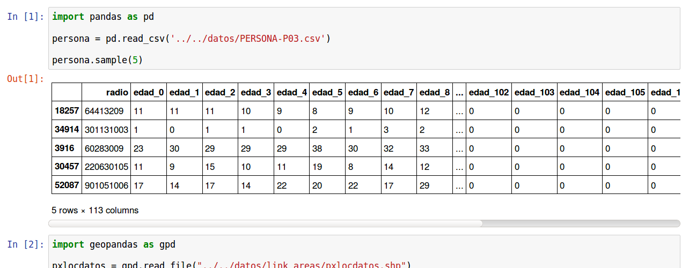
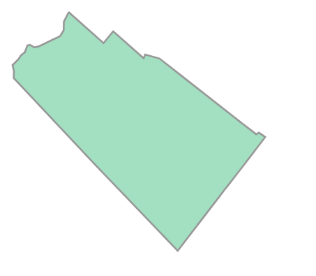

Intro: Jupyter notebooks, Pandas DataFrames, y GIS¶
Jupyter Notebook es una poderosa herramienta que permite a los usuarios de Python crear y compartir documentos que contengan código en vivo, visualizaciones, textos explicativos y ecuaciones. El término “notebook” se refiere a que la herramienta Jupyter te permite escribir fragmentos de código ejecutable autónomo (las “celdas”), anotar cada procedimiento e incluso visualizar los datos con los que está trabajando en cualquier paso del camino.
¿Por qué debería usar un Jupyter Notebook?
Jupyter Notebook ha ganado enorme popularidad en la comunidad de Python data science en los últimos años por una variedad de razones. Segun el usuario de GIS Alberto Nieto, Jupyter Notebook es extremadamente útil porque:
Permite probar lineas ‘borrador’ de codigo
Los Jupyter notebooks son extremadamente útiles cuando no hay un proceso final definido y aún estamos en la fase de creación de prototipos (o sea probando que cosas podrian funcionar, o no). Esto se debe principalmente a que el código se escribe en celdas independientes, que pueden ejecutarse independientemente del resto del Ecódigo. Esto nos permite probar rápidamente un paso específico sin volver a ejecutar el código desde el comienzo cada vez.
La visualización de Dataframes Pandas
Pandas (Python Data Analysis Library) proporciona estructuras de datos (tablas, etc) de alto rendimiento y fáciles de usar que te permiten trabajar con gran cantidad de datos extremadamente rápido. El objeto de datos principal es un Dataframe, que es esencialmente una tabla en memoria que permite operaciones muy potentes, como vamos a ver.
Jupyter Notebook te permite visualizar estas tablas en cualquier punto de su computadora portátil. Esto es extremadamente útil porque podes ver el estado de tus datos (y el resultado de cada accion del código sobre los datos) al ejecutar cada paso.
Pandas nos permite combinar tablas, hacer operaciones en las filas y columnas, agrupar segun los valores en algunas columnas y hacer operaciones. En fin, nos permite hacer y deshacer lo que se nos ocurra con las tablas de datos.
Manos a la obra! Datos Censo 2010 (Indec)¶
Poblacion por edad y radio censal. Censo 2010
Vamos a bajar y extraer el archivo PERSONA-P03.csv de la carpeta de datos contiene informacion recopilada del Censo Nac. de Hogares y viviendas 2010. En este caso, poder tener la informacion en un formato tan conveniente se lo debemos a Manuel Aristaran, que colgo los resultados de queries a la base de datos REDATAM en donde estan registrados los resultados del ultimo censo en Argentina.
En particular el archivo que tenemos aca tiene una columna con los codigos que identifican los radios censales, con el nombre ‘link’. El resto de las columnas corresponden a cada edad posible en anios, de forma que cada fila puede tomarse como informacion de la piramide poblacional de un radio censal. Con este dataset podemos saber esencialmente cuanta gente de cada edad habia en cada lugar en octubre de 2010.
Vamos a cargarlo en un notebook de IPython:
In [1]: import pandas as pd
In [2]: persona = pd.read_csv('datos/PERSONA-P03.csv')
#Ahora ya tenemos guardado el dataset como un DataFrame de pandas.
#Un dataframe tiene muchos metodos que nos sirven para interactuar con el. Por ejemplo, para ver una muestra de la data:
In [3]: persona.sample(5)
Out[3]:
radio edad_0 edad_1 edad_2 edad_3 edad_4 edad_5 edad_6 \
46863 820630703 5 2 4 6 3 11 6
32379 300080709 2 0 0 0 2 1 1
4347 60352707 48 36 45 38 32 35 35
47969 820843008 10 12 14 11 18 15 11
42102 620420104 0 3 2 0 0 0 1
edad_7 edad_8 ... edad_102 edad_103 edad_104 edad_105 \
46863 8 7 ... 0 0 0 0
32379 1 2 ... 0 0 0 0
4347 36 41 ... 0 0 0 0
47969 14 17 ... 0 0 0 0
42102 2 0 ... 0 0 0 0
edad_106 edad_107 edad_108 edad_109 edad_110 TOTAL
46863 0 0 0 0 0 581
32379 0 0 0 0 0 66
4347 0 0 0 0 0 1557
47969 0 0 0 0 0 948
42102 0 0 0 0 0 69
[5 rows x 113 columns]
Geopandas¶
Los ejemplos que voy a mostrar explotan no solo la data estadistica sino tambien la geografica. Notar que la clave del dataset persona que acabamos de cargar es que tenga un codigo identificatorio del area censal. Esto es esencial porque nos permite la combinacion con otros dataset que compartan esta columna, o bien que tengan una columna, por ejemplo ‘provincia’ o ‘departamento’ que se pueda combinar con la de los radios censales.
Hay un detalle que tambien hay que tener en cuenta. Cuando estamos en la capa geografica, mucha informacion puede naturalmente corresponder a puntos, lineas o poligonos (areas) en el espacio. Estamos habalndo por ejemplo de la ubicacion de edificios, el recorrido de lineas de transporte u otra infraestructura, o los limites de una provincia o distrito. La calidad de la informacion y de los analisis que podamos hacer va a ser infinitamente mayor si contamos con esta informacion de manera exacta.
Para este tipo de informacion, hay formatos especiales de archivos. Las alternativas son muchas, pero una bastante standard es usar archivos ShapeFile (.shp). El archivo .shp viene siempre acompaniado de otros archivos con informacion necesaria como aclaraciones de los sistemas de coordenadas, entre otras cosas.
En una terminal (ubicarse en el directorio donde)
$ unzip datos.zip
$ cd datos/link_areas/.shp
$ ls
metadatos shape pxlocdatos.pdf nota aclaratoria.pdf pxlocdatos.cpg
pxlocdatos.dbf pxlocdatos.prj pxlocdatos.qpj pxlocdatos.shp pxlocdatos.shx Thumbs.db
Ahora vamos a usar el modulo geopandas, que esencialmente es lo mismo que pandas, con la posibilidad de incluir formas geometricas (puntos, lineas, poligonos) y hacer operaciones con ellos.
Coordinate reference system (CRS)
Un GeoDataFrame que se lee de un ShapeFile contiene por lo general informacion sobre el sistema de coordenadas en el cual esta proyectada la data.
Empecemos leyendo la data del archivo pxlocdatos.shp.
In [4]: import geopandas as gpd
# Leer data
In [5]: pxlocdatos = gpd.read_file("datos/link_areas/pxlocdatos.shp")
# Muestra de la data
In [6]: pxlocdatos.sample(3)
Out[6]:
link codpcia coddpto codloc provincia departamen \
3097 82077080 82 077 080 Santa Fe 9 de Julio
2583 66042007 66 042 007 Salta Chicoana
1429 22154040 22 154 040 Chaco Sargento Cabral
localidad func_loc tiploc tip2loc \
3097 Tostado 3 1 0
2583 Barrio Santa Teresita 0 1 0
1429 Ingeniero Barbet 0 1 0
... longitud xgk ygk varones \
3097 ... 61 46 19 6765406.0 5327716.0 7014.0
2583 ... 3543129.0 7507231.0 353.0
1429 ... 59 28 55 5551422.0 7014088.0 132.0
mujeres personas hogares viv_part_h viv_part \
3097 7568.0 14582.0 4305.0 4129.0 4846.0
2583 368.0 721.0 166.0 165.0 195.0
1429 145.0 277.0 70.0 39.0 51.0
geometry
3097 POINT (3911236.75 6759289)
2583 POINT (3543128.75 7231742)
1429 POINT (4147700 6997206)
[3 rows x 21 columns]
Al igual que en un DataFrame corriente de pandas, podemos por ejemplo preguntar cuales son las columnas de esta tabla:
In [7]: pxlocdatos.columns
Out[7]:
Index([ u'link', u'codpcia', u'coddpto', u'codloc',
u'provincia', u'departamen', u'localidad', u'func_loc',
u'tiploc', u'tip2loc', u'latitud', u'longitud',
u'xgk', u'ygk', u'varones', u'mujeres',
u'personas', u'hogares', u'viv_part_h', u'viv_part',
u'geometry'],
dtype='object')
Podemos ver el sistema de referencia con el atributo .crs:
In [8]: pxlocdatos.crs
Out[8]:
{u'ellps': u'WGS84',
u'k': 1,
u'lat_0': -90,
u'lon_0': -66,
u'no_defs': True,
u'proj': u'tmerc',
u'units': u'm',
u'x_0': 3500000,
u'y_0': 0}
Informacion sobre los sistemas de coordenadas se puede encontrar en:
Para obtener datos de las formas geometricas de las localidades vamos a cargar los archivos shape pertenecientes a la Provincia de Buenos Aires y la Ciudad de Buenos Aires (CABA).
In [9]: Buenos_Aires_datos = gpd.read_file("datos/Buenos Aires/Buenos_Aires_con_datos.shp")
In [10]: Buenos_Aires_datos.sample(5)
Out[10]:
toponimo_i link varon mujer totalpobl hogares viviendasp \
6092 301438 062700714 586.0 590.0 1176.0 331.0 348.0
18075 308445 067000210 237.0 263.0 500.0 216.0 264.0
10776 299948 061190403 190.0 172.0 362.0 123.0 221.0
5605 308362 065150802 523.0 513.0 1036.0 312.0 310.0
5747 298752 060353504 384.0 416.0 800.0 246.0 263.0
viv_part_h geometry
6092 319.0 POLYGON ((4180746.823549158 6113916.398708752,...
18075 213.0 POLYGON ((3817003.645997512 5831928.423781276,...
10776 119.0 POLYGON ((4215898.328590137 6091259.880455916,...
5605 280.0 POLYGON ((4174755.42971666 6158035.954470803, ...
5747 226.0 POLYGON ((4197180.245954935 6138202.139991279,...
Fijense que hay una columna que se llama geometry. En general la informacion especial de los objetos va a ir a para a esta columna. en el caso de la tabla ‘pxlocdatos’ los elementos son instancias de shapely.Point. Estan describiendo probablemente un centroide del radio censal. El dataset de la Provincia si tiene formas geometricas, ver por ejemplo lo que pasa cuando hacemos:
In [11]: Buenos_Aires_datos['geometry'][10]
Out[11]: <shapely.geometry.polygon.Polygon at 0x2b7718dc5450>
Que nos grafica el area de la fila 10 con un dibujito.
{kind=link}
Los GeoDataFrames permiten usar toda la funcionalidad de los DataFrames de pandas. Por ejemplo, podemos crear nuevas columnas con codigos de provincia y departamento (partido/comuna) y otra columna que se va a llamar ‘dpto_link’ que es una concatenacion del codigo de provincia y departamento, de forma de tener un codigo de departamento util a nivel nacional.
Como ultimo ejemplo podemos graficar las localidades en el espacio. Las coloreamos segun la provincia, para ilustrar una de las posibilidades.
#import the standard plotting module
In [12]: import matplotlib.pyplot as plt
In [13]: %matplotlib inline
---------------------------------------------------------------------------
NotImplementedError Traceback (most recent call last)
<ipython-input-13-2b1da000a957> in <module>()
----> 1 get_ipython().magic(u'matplotlib inline')
/home/miglesia/anaconda2/lib/python2.7/site-packages/IPython/core/interactiveshell.pyc in magic(self, arg_s)
2161 magic_name, _, magic_arg_s = arg_s.partition(' ')
2162 magic_name = magic_name.lstrip(prefilter.ESC_MAGIC)
-> 2163 return self.run_line_magic(magic_name, magic_arg_s)
2164
2165 #-------------------------------------------------------------------------
/home/miglesia/anaconda2/lib/python2.7/site-packages/IPython/core/interactiveshell.pyc in run_line_magic(self, magic_name, line)
2082 kwargs['local_ns'] = sys._getframe(stack_depth).f_locals
2083 with self.builtin_trap:
-> 2084 result = fn(*args,**kwargs)
2085 return result
2086
<decorator-gen-106> in matplotlib(self, line)
/home/miglesia/anaconda2/lib/python2.7/site-packages/IPython/core/magic.pyc in <lambda>(f, *a, **k)
191 # but it's overkill for just that one bit of state.
192 def magic_deco(arg):
--> 193 call = lambda f, *a, **k: f(*a, **k)
194
195 if callable(arg):
/home/miglesia/anaconda2/lib/python2.7/site-packages/IPython/core/magics/pylab.pyc in matplotlib(self, line)
98 print("Available matplotlib backends: %s" % backends_list)
99 else:
--> 100 gui, backend = self.shell.enable_matplotlib(args.gui)
101 self._show_matplotlib_backend(args.gui, backend)
102
/home/miglesia/anaconda2/lib/python2.7/site-packages/IPython/core/interactiveshell.pyc in enable_matplotlib(self, gui)
2954 # Now we must activate the gui pylab wants to use, and fix %run to take
2955 # plot updates into account
-> 2956 self.enable_gui(gui)
2957 self.magics_manager.registry['ExecutionMagics'].default_runner = \
2958 pt.mpl_runner(self.safe_execfile)
/home/miglesia/anaconda2/lib/python2.7/site-packages/IPython/core/interactiveshell.pyc in enable_gui(self, gui)
2913
2914 def enable_gui(self, gui=None):
-> 2915 raise NotImplementedError('Implement enable_gui in a subclass')
2916
2917 def enable_matplotlib(self, gui=None):
NotImplementedError: Implement enable_gui in a subclass
# create subplots
# Add title
# Remove empty white space around the plot
Los ejemplos mostrados aqui estan en el notebook 1_Geopandas.ipynb